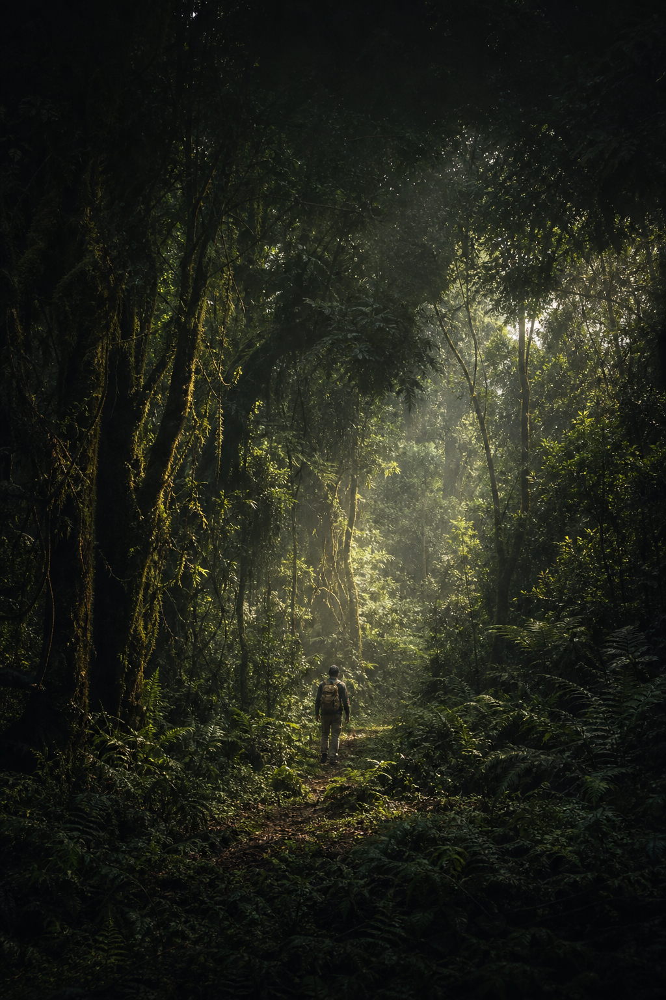

A. Lost Is Not Alone
Cinematic forest, route overlay, national-geographic meets film poster.

BetweenSundays
Free wherever found
Bethel
Start
Lost Is
Not Alone
Jacob went out with no map, no home, and no proof that the ground beneath him was holy.